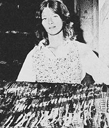
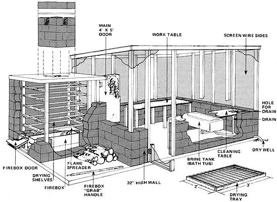

Can a fed-up corporate executive forfeit his pole position in the rat race, build a $500 smokehouse out in the country . . . and rapidly begin earning more than $2,000 a month selling home-cured fish to bars and restaurants? Yep. Buck Taylor, a Florida man, has done just that . . . and he insists that others (maybe you) can do it too! All it takes-he says?to get started in this do-it-yourself business is a large oven, a load of fresh fish, some hickory and oak logs, and an overriding desire to . . .
I've finally come full circle.
I started out, you see, as a healthy outdoorsman . . . but-lured by promises of "super-money"?I quickly sold my soul for admittance into The Land Of The Corporate Executive. The Management Team. Where, I eventually learned, the money was not nearly as good as I had been led to believe . . . but where the hours were long and the pressure was tremendous.
As a result, I became just another frustrated pencil pusher. My mental attitude soured. Bags appeared under my eyes. I became chronically tired. My family life suffered. I was rapidly becoming just another pale candidate for ulcers or a heart attack. And then . . .
And then I got a grip on myself, hurled myself right off that "prestige" treadmill to oblivion . . . and began to "smoke" my way back to the freedom, independence, and healthful outdoor life that I had originally known.
The lucrative enterprise which has given me back my life is nothing but the smoking and selling of fish to bars, restaurants, and individuals here in Miami. And, believe it or not, I didn't know a thing about my new profession when I first plunged in.
All I was really sure of back then was that I desperately wanted out of Executive Row. I had, in fact, already made several false (and costly) starts toward the freedom I so eagerly craved. I was, to put it another way, something of a drowning man clutching at straws at that point in my life . . . when some chance conversations with seemingly successful people in the field directed my attention to the smoking business.
Little wonder then that?although I knew nothing about smoke-curing fish at the time?I was what you'd call "highly motivated" to give the occupation a try. I optimistically figured I could learn what I needed to know as I went along. And I did! The thoughts of?at last!?being self-employed (which danced through my head like visions of sugarplums) made working out the details of my new life a pleasure.
I started laying the foundation for my mini?enterprise by visiting the smokehouses owned by other people who were already in the fish curing and marketing business. Soon, based on the information I picked up from these trips, I [1] was reasonably sure that my longed-for occupation could support my family, [2] had made an informed guess that our savings account contained barely enough cash to set me up in the smoking business, [3] knew of and had checked out sources for the raw fish I'd need, and [4] was finishing construction drawings for a smokehouse of my own .
All well and good . . . on paper. But just as I was ready to dash off and build that smokehouse . . . I realized that I didn't have any place to put the structure!
What I wanted, of course, was a fair-sized piece of land on the side of a well-traveled road with clear approaches from both directions so that [A] large numbers of passing motorists could [ B] see my operation early enough to [C] give potential customers the time they'd need to [D] pull into my parking lot and [E] buy the large quantities of cured fish I expected to sell!
Unfortunately, the ideal?and rather expansive?piece of property I had in mind proved to be a lot harder to find and a great deal more expensive to rent than I had anticipated. What I had to settle for, when I came right down to it, was a few square feet on an out-of-the-way farm located off a back road several miles from town.
Still, that remote rural location did have some worthwhile features all its own. First, it was very inexpensive. Second, the license I needed for my business was both easier to obtain and less costly way out there in the country than it would have been if I'd tried to set my smokehouse up in either the city or along a main road close to Miami. Third, it was almost a sure bet that?sooner or later?some of my urban neighbors would [A] object to the light wisps of smoke from my operation or [B] try to break into the smokehouse and steal its contents if I built the structure in town. And it was just as sure a bet that no one would ever give me either kind of trouble if I set the house up out there in the sticks.
For obvious reasons, I quickly decided to establish my business on that backwoods farm . . . and, with the sometime?help of a few friends, I began construction of the smokehouse the very next weekend. None of us really knew what we were doing but the building wasn't too complicated and?five weekends and $500 in materials later?it was substantially completed. Then, while finishing touches were still being made on the structure, we immediately "fired up" the oven for the first time and began curing 50 pounds of whiting fillets.
Surprisingly enough, that initial batch of fish turned out pretty well. A bit undercooked, perhaps, but the taste we were after was definitely there. I got a lot of compliments on the samples I distributed and two bars agreed, on the spot, to buy my fish if I'd smoke the fillets a little longer and make them somewhat saltier.
I enjoyed even more success the following weekend . . . when I actually sold half my "samples" and began taking orders for a third batch of fish. And that was only the beginning: Within six weeks, I had recovered the $500 that the materials for my smokehouse had cost and I was already getting prepared to quit my office job and go into the specialty food business full time!
I've been "on my own" ever since, arid I can't tell you how good it feels. How can you compare a boss' cigar smoke to the delicate aroma of catfish cooking over hickory and oak logs!
Yes, I'm convinced that you can do just as well in this field as I have . . . maybe even better. Study the market in your area. If there aren't scads of commercial smokehouses already fighting for the attention of every potential customer, your chances can be considered excellent.
Shop around. Find out where you can obtain a steady supply of fish at a reasonable price (well below a dollar a pound). Or?if smoked seafood is not particularly popular where you live?look into the possibility of curing hams, turkeys, cheese, or sausage. Even though this article concentrates on fish, the basics that I cover can be applied to any smoked food (as proof of that fact, I even run off an occasional batch of other meats or cheese in my own oven).
Once you're sure that you've lined up a steady supply of raw materials at an acceptable price, examine your financial situation (as I did) and decide if you want to set your smoker up on a well-traveled?and expensive?boulevard or (as I was forced to do) out in the sticks. My feeling is still that a good roadside location is worth its price, if you can swing it.
Next visit your city's or county's license bureau, the pollution control people (if necessary), and any other officials who legally have anything to say about how you house and operate this business in your area. Find out what it takes to keep these people smiling . . . and do it.
And finally?after you've done the above homework, you've built your smokehouse, and you've run off a sample batch or two of your specialty-the only thing left for you to do is to distribute samples to a few potential customers. And if that last step in the establishment of this enterprise worries you, just remember one thing: My experience leads me to believe that smoked fish and other such specialties will sell to restaurants and bars anywhere . . . IF you produce a quality product.
I won't say that you have to build your smoker exactly the way I built mine (if I learned anything from those initial visits to other seafood-smoking establishments, it was that there are at least 1,003 different ways to construct a smokehouse). Just so you will have an idea of what the task involves, however, I'll take you through the steps I followed in constructing my smoker. (A floor plan is shown in Fig. 1.)
[1] First we removed all rocks, stumps, etc., from the ground we had chosen for our construction site and we leveled the area. Then we built a 12' X 20' foundation form out of 2 X 4's, crisscrossed the space within the form with hog wire and steel rods (for reinforcement), and poured the 12' X 20' four-inch-thick slab of concrete on a sunny day. (Figure on about 3-1/2 cubic yards of mix for a slab this size.)
[2] After the foundation had cured for 48 hours, we were ready to put up the walls for our smokehouse. To do that, we laid four rows of block (which made a wall 32" high), sealed the top course with concrete, and then framed the structure on up eight feet tall in front and seven in the back with 2 X 4's. The building was finished with window screen all around to keep out insects and topped with the least expensive galvanized roofing we could buy.
[3] The attached oven was constructed a little differently. Its walls are block all the way to the top (nine rows, or 72"), topped with a three-inch-thick poured concrete roof. Although the outside dimensions of our oven measure approximately five by seven feet, I think the unit would be a lot handier to use if we'd have made it six feet wide. Use your own judgment.
Whatever you do, though, don't forget to leave the 16"square opening on the floor of the oven's outside or "back" wall (so you'll have a way to slide the firebox in and out). Nor should you forget to allow for a large-say 4' X 5'?main door (through which you'll load and unload fish) between the oven and the smokehouse . . . or to leave an 18"-square hole right in the center of the oven's roof (for a chimney).
The firebox door can be framed in with 2 X 4's and closed with a close-fitting cover (a 2 X 4 frame faced on the outside with 3/8" or 1/2" plywood, packed with insulation, and faced on the inside?to protect it from the flame's heat?with ungalvanized metal) that is hinged along its top. The main loading door (also a 2 X 4 frame faced on the outside with 3/8" or 1/2" plywood, packed with insulation, and faced on the inside with ungalvanized metal) should be hinged on its left edge so that it'll swing flat against the smokehouse wall as shown in the drawing with this article. And the chimney is made of three solid rows of a concrete block and a half each, topped by four spaced blocks, covered with a sheet of metal (to keep the rain out), and topped again by four spaced blocks (to hold the piece of metal in place).
If you lay a sheet of plastic over the form for the oven's roof, by the way, the finished ceiling will be plenty smooth enough to use with no further work. (Do remember, however, to peel away the plastic before you cure your first batch of fish!) The inside of the oven's walls should be painted with a coat or two of water mixed with cement to seal the pores in the blocks.
[4] The firebox that sits on the oven's floor is simply a 3/16" sheet steel container that measures one foot high, one foot across, and five feet long. Mount a handle on one end of the box and make a stick (a broom handle with a hook screwed into one end will do) that you can use to grab the handle and pull the box out with when it's hot.
[5] A flat sheet of steel must be suspended over the firebox to spread its blaze and keep the flames from burning the fish that will be loaded into the oven. We cut our spreader plate from 1/4" steel so that?when the sheet of metal was supported at each corner on upturned concrete blocks?there was a six-inch gap on all four sides between the edges of the steel plate and the walls of the oven.
[6] The wooden stand which holds our fish as they're being smoked was made to fit quite snugly inside the finished oven. The rack contains five shelves spaced 10" apart vertically . . . although this vertical spacing is not terribly important. What is important is the frame's legs: if they're made of wood, keep them as far as possible from the oven's firebox (so that even the most violent "back-draft" down the smoker's chimney can't force flames over against the legs and ignite them). An even better bet, of course, is to use angle iron for your rack's main structural members.
[7] The trays (ten of them) which rest on the wooden stand each measure 2' X 3' and they fit two to a rack. We made ours from scrap 1 X 2's with 1 "-by 2"-grid wire stapled (stapling is easier than nailing) across their tops. NOTE: Use only plain, uncoated wire on these trays. The galvanized mesh of hardware cloth will give off toxic fumes when heated.
[8] We built the cleaning and work tables in our smokehouse very quickly and easily by mounting half sheets of plywood on 2 X 4 frames. And we were sure to give that plywood several coats of good varnish. (The tables do get drenched with brine and fish juice and, left unprotected, the wood wouldn't last long.) The cleaning table was slanted slightly toward a hole cut into its out-of-the-way end. And there was a particular reason for that.
The preparation of smoked fish produces two types of waste. The first?an accumulation of heads, backbones, and entrails?must be packaged, hauled away, and dumped. There's no getting around it. The second kind of waste, though?the hundreds of tiny bits 'and slivers that appear as you slice the fish for the oven (especially after they've soaked overnight in brine)?can be disposed of somewhat easier. You can either [A] push them to the back of your cleaning table, scrape them off into a trap mounted under that hole mentioned in the last paragraph, and then dump them into a garbage pail, or [B] flush the particles through that same hole into a drainpipe connected to a 12-foot-deep dry well dug just outside the smokehouse . . . and simply let the little bits of fish, brine, and cleaning water all percolate away into the soil. (That's what I did, and I've found that this method of doing away with such waste won't taint a nearby water well, as long as it's ten or more feet away from the percolation hole.)
[9] An old five-foot-long porcelain bathtub?as long as it's not cracked or chipped?makes an ideal brine tank. Mount it on a simple frame that both holds it steady and tilts it slightly toward a drainpipe connected to the same dry well that drains the cleaning table.
[10] And finally, you must find a way to get water to your smokehouse . . . even if you have to bring it in through a hose. Electricity is not absolutely essential, since the sun can provide natural lighting if you work only during the day and?more likely than not?you'll want to keep your storage refrigerator at home. But you will use water at the smokehouse in large quantities and frequently.
Once you have your smokehouse up and finished, you'll need only a few other pieces of equipment to put you in the fish-curing business. Probably the most expensive is a really big refrigerator (remember, you'll be able to process 500 pounds of meat at a time in the smoker I've just described). I bought my commercial-sized reefer secondhand at a restaurant supply house, and I recommend that you check out the same source (or sources) in your area.
And while you're there, look around for a heavy-duty oven thermometer with a temperature range of at least 50° F to 225° F (0° to 300° F is even better). An adequate thermometer can be purchased for about $35, but don't hesitate to spend more for one of exceptional quality. That thermometer?mounted in the center of your oven's main door, with its probe sticking several inches into the curing chamber?is probably the single piece of equipment most critical to the success of your whole operation.
The last major item you'll need is a trailer of some sort in which to haul 750 to 1,000 pounds of fresh fish at a time in from the docks. (Remember, once you're rolling, you'll make your money by keeping that oven full. ) Of course this doesn't mean that your trailer has to be anything fancy. A homemade rig with a 4' X 8' plywood floor, 3' sides, and a plywood lid to keep the sun off does the job for me. On the other hand, if you have to bring your fish in from a long distance away, you'd be well advised to carry the iced seafood in a watertight trailer that's insulated with 3/4" styrofoam and painted silver on the outside . . . and such a rig will, naturally, cost you more than mine cost me.
The remaining supplies you'll need for your new business can all be bought or scrounged fairly inexpensively. They include:
[1] A good quality cleaning knife, 10" blade or longer. Keep this baby sharp.
[2] A hose and nozzle for washing down fish, brine tank, floor, and oven.
[3] A paintbrush?four inches wide?for coating fish trays with oil.
[4] A wire brush with which to clean the smoker trays after a batch of fish has been processed.
[5] A wooden tablespoon, for measuring and stirring.
[6] A clock, for timing the high- and low-temperature phases of the cure.
[7] Bleach, which is used to swab the floor daily (to eliminate bug traffic).
[8] Cooking oil, non-iodized salt, spices, and firewood.
About that very last item: I use Australian pine as well as oak in my oven. Hickory is almost impossible to get here in southern Florida and commands a ridiculous price when you can find it. No matter what kind of firewood you decide to use?and as you can see from the accompanying table, there are many varieties to choose from?don't pick one that's heavy with sap. For example, common yellow pine can ruin your smoked fish by imparting the less-than-delicate flavor of turpentine to the fillets!
Keep your firewood covered and dry when not in use. This will ensure that the fuel burns uniformly and will make your fires a lot easier to start.
EDITOR S NOTE: This has been the first half of a two-part article. In MOTHER NO. 40, Mr. Taylor will describe how he cleans and smokes the fish that he sells.
All right. You've chatted with fish dealers, checked out locations, given it some careful thought, and decided you just may want to try your hand at selling smoked fish. Great! Now you're probably wondering?and rightly so-what kind of money a person can really, truly make in this business.
Well, one man knows the answer to that as well as anyone, and that one man is Buck Taylor of Miami, Florida. Buck?who began his operation with no special knowledge or experience?has been "smoking" for a living, full time, since April of 1975 . . . and he now regularly earns $600 per week (and more). "It's a supernice do-it-yourself enterprise," says Buck, "if you don't mind getting your hands dirty a couple of days a week."
With regard to the business of running a smokehouse, Buck Taylor has this advice to offer MOTHER's readers:
"First of all, in establishing your price structure, consider the audience you're selling to. Will they buy at $3.00 a pound? If so, fine . . . but in any case, you should charge a minimum of $2.00 a pound for your product (more, if you decide to add a few spices and label it gourmet food). An ovenload of fish?approximately 500 pounds?at that price should bring in over $1,000.
"When you calculate your expenses, don't forget that at least 30% of the weight of an uncleaned fish eventually ends up as waste. The average is more like 40% and you'll lose over 50% when you clean some species, such as amberjack. In addition, still more weight loss occurs in the oven. It does help to leave the skins on fillets . . . but even so, a good 20% of an ovenload will drip onto the fire-shield or simply 'go up in smoke'.
"Let's consider a typical situation. Suppose you bought 1,000 pounds of kingfish at 50 cents per. This half ton of uncleaned fish will actually 'fillet out' at around 600 oven-ready pounds. Another 180 pounds (30%) will disappear in cooking, leaving you with 420 pounds of cured fish for which?in its raw form?you paid $500. Taking into account wood, spices, gas for the truck, etc., your expenses thus far total, say, $510.
"Now, if you sell those 420 pounds of cured fish for $2.00 per pound, then your gross income will be $840 . . . and the net profit comes to $840 minus $510, or a nifty $330. Not bad for a day and a half of work! This is assuming that you sell all of what you cook. Note, however, that if you had paid 75 cents a pound for the raw fish, you would only have come out ahead $80 for the whole ovenload. In this instance, the thing to do would be to raise the selling price to $2.25 or $2.50."
Are big game fish where the big money is in the fishsmoking biz?
"Interestingly enough, my best-selling items are little two-ounce packages of hard-cooked strips. Bars?and corner groceries that sell beer?buy these by the hundreds and resell for a modest profit, knowing full well that the salt in them makes customers crave beer! Naturally, there's a good bit more labor in cutting out the small strips than in preparing large fillets for the oven. However, the little packs bring me 35 cents each?or $2.80 a pound?and man, do they sell!
"Another lucrative area is custom smoking for fishermen. Once you're established, outdoorsmen will occasionally bring all or part of their catch to you for curing. The advantages to this are that you get paid in advance and bear no real added costs if you were going to smoke an ovenload anyway.
"I charge a fee of 45 cents per pound for whole fish, while headless fish go into the oven for 55 cents a pound, and fillets 65 cents. It's a good idea to set some sort of size limit for raw fish: say, nothing under ten pounds. This way you save yourself a lot of unnecessary labor . . . and a fisherman isn't likely to be disappointed when he sees how tiny his catch is as it emerges from the oven. Those smaller fish really shrink during cooking!
"At holiday time, you can pick up a sizable sales bonus by smoking turkeys. The big birds must stay in the oven longer than most fish do, but they take a delicious cure and sell easily."
Taylor is quick to point out that there's more to making it with your own fish-smoking enterprise than merely having the requisite desire, a place to work, and a boundless supply of fish and hickory.
"Don't get caught without the proper pieces of paper. If you're located outside city limits?as I am?chances are all you'll need is a $5.00 vendor's license. However, city governments differ widely in their requirements, so about all I can say is be sure you satisfy all local ordinances.
"Saltwater fish are usually the easiest to come by in quantity, so make certain you know which species?if any?are illegal to sell in your area. Also, a Fish & Game permit is often needed before you can handle freshwater fish products. This costs five bucks but is generally well worth the money since some freshwater species-channel catfish in particular?just can't be beat after they've been smoked for hours over a slow-burning fire!
"About location: I can't emphasize too strongly that a boulevard location with plenty of road and foot traffic is a real plus. Of course, you can always go out and hustle bars and restaurants for a steady income . . . but, with walk-in business, that won't even be necessary. A good location on the highway will set you back more for rent than a rural operation?and may present more problems with zoning laws?but is, nonetheless, something that you should consider carefully."
|
 FIGURE 1 |
 |
|